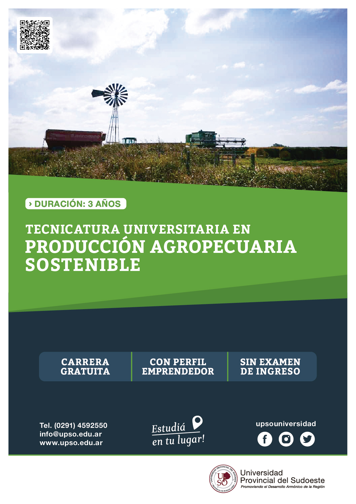
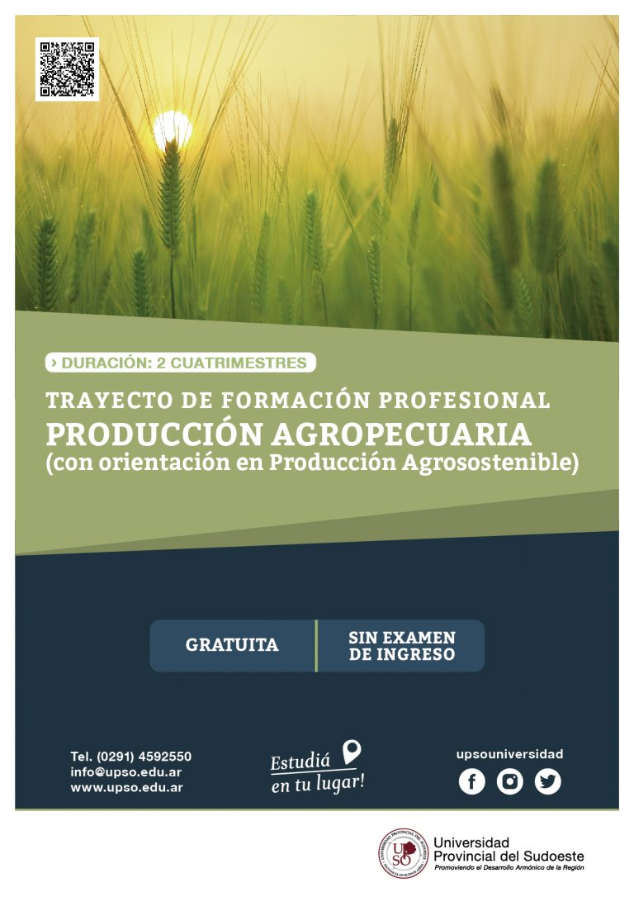
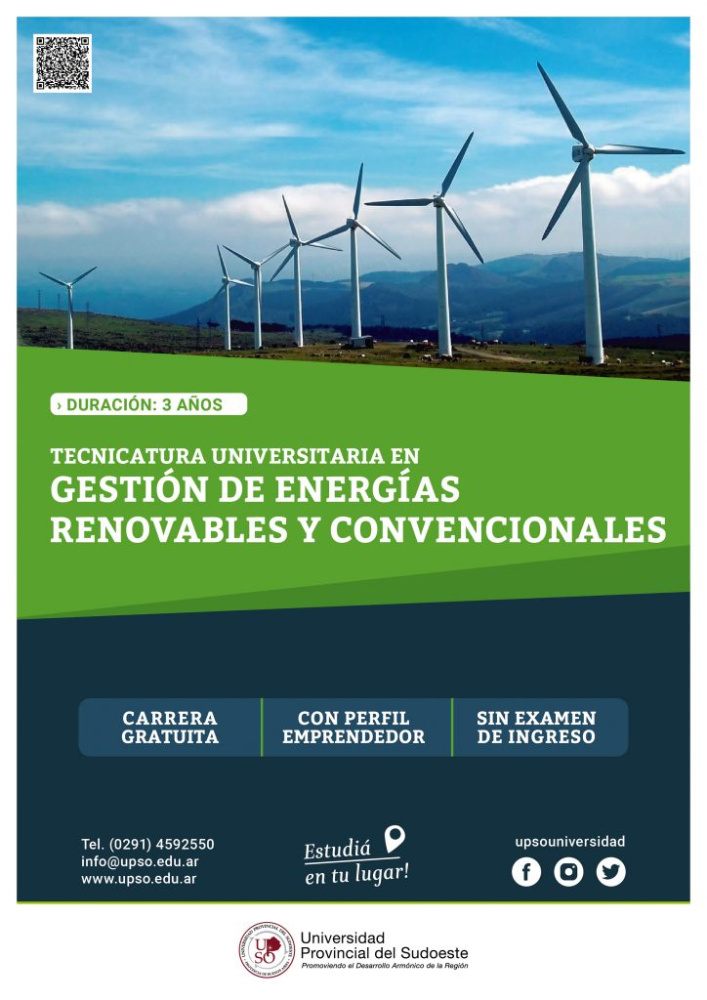
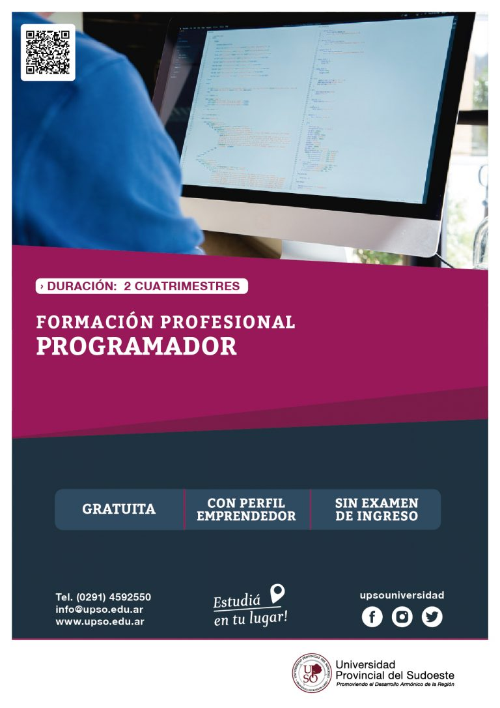

Tecnicatura Universitaria en Producción Agropecuaria Sostenible

Tecnicatura Universitaria en Producción Agropecuaria Sostenible
Los graduados en Tecnología en Gestión Agropecuaria están preparados para identificar y generar posibles emprendimientos productivos y negocios en diversas áreas del sector agropecuario. Además, pueden implementar y administrar empresas existentes o nuevas dentro de este complejo.
También tienen la capacidad de diagnosticar la situación de pequeños y medianos emprendimientos agropecuarios, formular proyectos de inversión y evaluar su factibilidad, diseñar y evaluar programas de reconversión y mejora para empresas agropecuarias, y asesorar sobre cuestiones de constitución empresarial.
Formación Profesional: Producción Agropecuaria

Formación Profesional: Producción Agropecuaria
Formación en Sostenibilidad Agrícola
Capacitación para transformar sistemas de producción tradicionales en modelos sostenibles. Enfoque holístico integrando componentes físicos, biológicos y socioeconómicos.
Dirigido a productores agrícolas,
Educadores, técnicos y funcionarios
¿Qué aprenderás?
Aplicar conceptos sostenibles en la producción
Utilizar tecnologías ecológicas y biológicas
Únete para liderar el cambio hacia una agricultura sostenible.
Tecnicatura Universitaria en Desarrollo de Aplicaciones Web
Tecnicatura Universitaria en Desarrollo de Aplicaciones Web
Conviértete en un creador digital. Como Técnico en Desarrollo de Aplicaciones Web, aprenderás a diseñar y construir sitios y aplicaciones que funcionan en línea. Desde conectar clientes con servidores hasta brindar soporte técnico, esta carrera te prepara para el mundo digital en constante evolución.
Tecnicatura Universitaria en Gestión de Energías Renovables y Convencionales

Tecnicatura Universitaria en Gestión de Energías Renovables y Convencionales
La Tecnicatura Universitaria en Gestión de Energías Renovables y Convencionales ofrece una formación sólida para aquellos interesados en el campo energético.
Al graduarse, los técnicos universitarios poseen conocimientos que les permiten comprender el sistema global de transformación de la energía, transporte y distribución, así como también los mercados asociados. Esta carrera es una excelente opción para quienes buscan contribuir al desarrollo sostenible y la gestión responsable de los recursos energéticos.
Programador

Programador
El graduado está capacitado, de acuerdo a las actividades que se desarrollan en el Perfil Profesional, para utilizar herramientas informáticas de uso corriente en su entorno de trabajo en la resolución de problemas propios de la actividad que realice dentro de una variedad de actividades generales de apoyo administrativo y de gestión comunicacional, remitiéndose a especialistas para solucionar problemas de mayor complejidad.
El Programador es un profesional que podrá colaborar en proyectos de desarrollo de software desempeñando roles que tienen por objeto implementar programas, módulos, buscar y corregir malfuncionamientos y adaptar componentes softwares a nuevas especificaciones.
Licenciatura en Gerenciamiento de PyMEs
Licenciatura en Gerenciamiento de PyMEs
La Licenciatura en Gerenciamiento de Pequeñas y Medianas Empresas prepara a los estudiantes para asumir roles clave en la gestión empresarial. El alcance del título incluye la conducción, gestión o consultoría en pequeñas y medianas empresas, así como la formulación y administración de presupuestos y la evaluación de proyectos de inversión.
Esta carrera es ideal para quienes buscan contribuir al crecimiento sostenible de las organizaciones empresariales.
Formación Profesional: Administración y Gestión de Microemprendimientos y PyMEs
Formación Profesional: Administración y Gestión de Microemprendimientos y PyME
La Administración y Gestión de Microemprendimientos y PyMES (Incorporación de competencias emprendedoras) es una formación especializada que ofrece la Universidad Provincial del Sudoeste. Durante este programa, los estudiantes adquieren competencias específicas para:
Comprender la lógica de los procesos de producción, trabajo y circulación de información en las organizaciones.
Transformar ideas en procedimientos, desarrollos concretos o cursos de acción.
Analizar los aspectos organizativos necesarios para implementar una empresa o una organización económica autogestionada.
Diseñar, presentar y desarrollar un Plan de Negocios.
Identificar herramientas de difusión para su emprendimiento.
Este programa ofrece una base sólida para aquellos interesados en desarrollar sus propios emprendimientos y contribuir al crecimiento sostenible de las pequeñas y medianas empresas.
Tecnicatura Universitaria en Emprendimientos Audiovisuales
Tecnicatura Universitaria en Emprendimientos Audiovisuales
La Tecnicatura Universitaria en Emprendimientos Audiovisuales es una formación especializada que ofrece la Universidad Provincial del Sudoeste. Durante este programa, los estudiantes adquieren competencias específicas para identificar, generar y desarrollar emprendimientos productivos en el sector audiovisual,
comprender, evaluar y diseñar estrategias comunicacionales eficaces en el sector público y privado, tanto en lo técnico como en lo económico.
El alcance del título incluye la utilización técnica de los diversos elementos del lenguaje audiovisual y las tecnologías asociadas para crear piezas comunicativas en las diferentes modalidades expresivas propias del sector. Además, los egresados pueden proponer, gestionar y gerenciar emprendimientos técnicos en la producción audiovisual, ya sea de forma autónoma o como parte de una empresa o institución. También están capacitados para asesorar en proyectos técnicos y recomendar profesionales especializados y tecnologías adecuadas para distintos aspectos de una producción audiovisual
Tecnicatura Universitaria en Emprendimientos Agroalimentarios
Tecnicatura Universitaria en Emprendimientos Agroalimentarios
La Tecnicatura Universitaria en Emprendimientos Agroalimentarios es una formación especializada que ofrece la Universidad Provincial del Sudoeste. Durante este programa, los estudiantes adquieren competencias específicas para:
Identificar y generar emprendimientos productivos y negocios en el área agroalimentaria.
Diagnosticar la situación de pequeños y medianos emprendimientos agroalimentarios.
Diseñar y evaluar planes de reconversión y mejora para empresas del sector.
Comprender y adaptar técnicas y procesos válidos para el procesamiento de alimentos.
Formular y evaluar proyectos de factibilidad técnico-económica de pequeños y medianos emprendimientos agroalimentarios.
El alcance del título incluye:
Resolver problemas técnicos en procesos, control de calidad y desarrollo de nuevos productos de la industria agroalimentaria.
Promover, gestionar, poner en marcha y/o gerenciar emprendimientos o negocios agroalimentarios.
Desempeñarse en forma privada en tareas de gestión o consultoría para empresas o emprendedores del sector o sectores afines.
En resumen, esta carrera forma profesionales capaces de impulsar el desarrollo sostenible en el ámbito agroalimentario, generando valor agregado y promoviendo la empleabilidad de los recursos humanos.
Tecnicatura Universitaria en Creación y Gestión de PyMes
Tecnicatura Universitaria en Creación y Gestión de PyMes
La Tecnicatura Universitaria en Creación y Gestión de Pequeñas y Medianas Empresas forma profesionales capacitados para impulsar y administrar negocios de tamaño reducido.
Los egresados adquieren habilidades en planificación, organización, y gestión, lo que les permite contribuir al desarrollo sostenible de emprendimientos y empresas en diversos sectores económicos.
Diplomatura Universitaria en Gestión Administrativa
Diplomatura Universitaria en Gestión Administrativa
La Tecnicatura Universitaria en Creación y Gestión de Pequeñas y Medianas Empresas forma profesionales capacitados para impulsar y administrar negocios de tamaño reducido.
Los egresados adquieren habilidades en planificación, organización, y gestión, lo que les permite contribuir al desarrollo sostenible de emprendimientos y empresas en diversos sectores económicos.
Diplomatura Universitaria en Desarrollo Local
Diplomatura Universitaria en Desarrollo Local
La Diplomatura Universitaria en Desarrollo Local de la Universidad Provincial del Sudoeste forma profesionales con un enfoque interdisciplinario. Los egresados están capacitados para analizar y diagnosticar problemáticas de desarrollo local, diseñar estrategias y gestionar programas y proyectos vinculados al desarrollo territorial.
El certificado de diplomado otorgado por la universidad valida su especialización en esta área.
Licenciatura en Desarrollo Local y Regional
Licenciatura en Desarrollo Local y Regional
La Licenciatura en Política Local y Gestión Pública de la Universidad Provincial del Sudoeste forma profesionales con habilidades estratégicas para:
Participar en equipos de planeamiento y evaluación de programas de desarrollo en espacios multiactorales.
Diseñar e implementar proyectos asociados a políticas públicas que aportan al desarrollo territorial.
Llevar a cabo acciones en la gestión pública con aptitudes emprendedoras y de liderazgo.
El título otorgado es Licenciado/a en Política Local y Gestión Pública.
Tecnicatura Universitaria en Emprendimientos Turísticos
Tecnicatura Universitaria en Emprendimientos Turísticos
La Tecnicatura Universitaria en Emprendimientos Turísticos de la Universidad Provincial del Sudoeste forma profesionales capacitados para impulsar y administrar negocios de tamaño reducido en el sector turístico.
Los egresados adquieren habilidades en planificación, organización y gestión, contribuyendo al desarrollo sostenible de emprendimientos y empresas en esta área.
Diplomatura Universitaria en Asuntos Municipales y Gestión Local
Diplomatura Universitaria en Asuntos Municipales y Gestión Local
La Diplomatura Universitaria en Asuntos Municipales y Gestión Local de la Universidad Provincial del Sudoeste forma profesionales con un enfoque interdisciplinario. Los egresados están capacitados para analizar y diagnosticar problemáticas de desarrollo local, diseñar estrategias y gestionar programas y proyectos vinculados al desarrollo territorial.
El certificado de diplomado otorgado por la universidad valida su especialización en esta área.